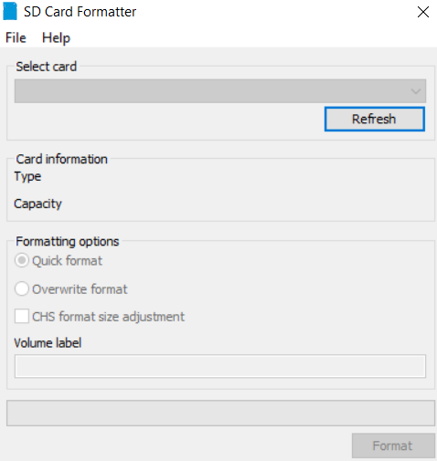
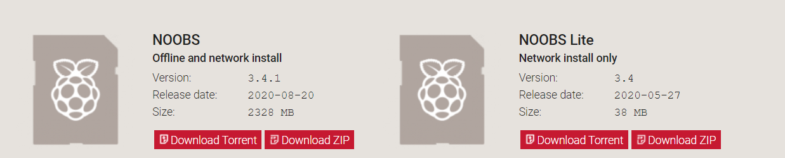
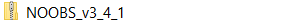

- Raspberry Pi OS Lite (32-bit) masaüstü desteğiyle gelmiyor. Yükleme durumunda görüntülenen terminal oluyor.


- Raspberry Pi gücümüzü kesiyoruz ve SD kartımızı Raspberry Pi ‘den çıkarıyoruz. SD kart okuyucumuzu bilgisayara takıyoruz ve bizim için uygun olan SD kart formatına kartımızı yerleştiriyoruz.
- Bundan sonra yapılması gereken asıl işlem SD kart içinde bulunan config.txt dosyasında birkaç düzenleme yapmak.
- Config.txt dosyanı açtığımızda böyle bir ekranla karşılaşırız.

- Düzenleyeceğimiz verilerin önünde yer alan # sembolü kaldırarak yorum satırlarını etkisizleştiriyoruz.Değiştirmemiz gereken değerler;
- hdmi_mode=4
- hdmi_group=2
- hdmi_force_hotplug=1
- disable_overscan=0
- overscan_right=24
- overscan_left=24
- overscan_top=24
- overscan_bottom=24
- config_hdmi_boost=4
- hdmi_ignore_edid=0xa5000080 (Eğer bu ifade config.txt içinde bulamadıysanız herhangi bir yere ekleyebilirsiniz.)
- Düzenleme bittikten sonra SD kartımızı sağ tuşa basıp güvenli bir şekilde çıkarıyoruz.
- Raspberry Pi Os veya Raspberry Pi Os Lite işletim sistemi kurulu SD kartımızı Raspberry Pi ‘ye yerleştiriyoruz.
- USB klavye,Mouse,güç kablosu,hdmi kablosu,internet kablosunu taktıktan sonra Rasppberry pi’ye güç veriyoruz.